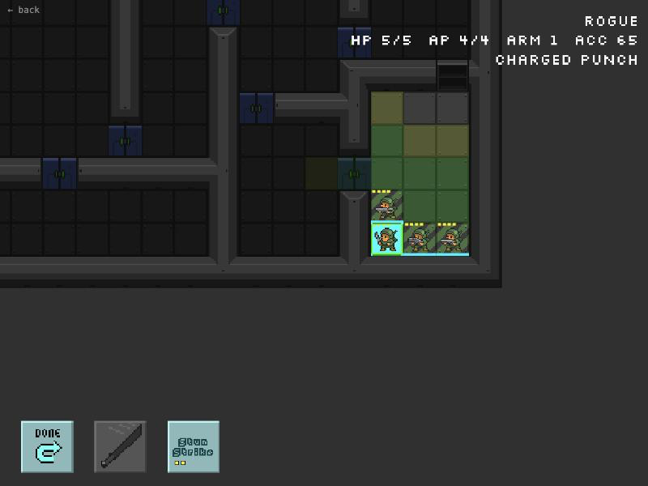
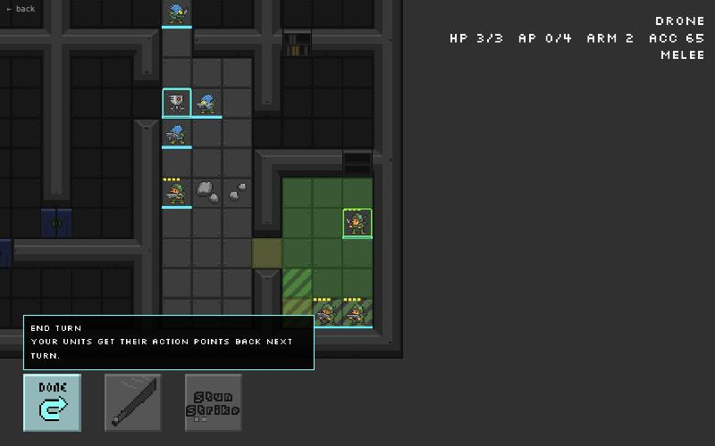

Marines vs Aliens
Completion ▰▰▰▰▰▰▱▱▱▱ 60% · full loop, thin content, identical factions
Marines vs Aliens is a small turn-based tactics game I built in Unity in spring 2020. A squad of space marines and a swarm of aliens fight it out on procedurally generated station maps, one action point at a time. Think a tiny, scrappy cousin of X-COM or Space Hulk, drawn with 16-bit sci-fi pixel tiles.
Most of the fun for me was under the hood. The maps come from a dungeon generator that carves rooms and links them with a minimum spanning tree, so every level stays connected. Units have AP costs for moving and attacking, two movement ranges, line of sight from a raycaster, and buffs such as stuns and armour shredding. The enemies run on a small subsumption-style AI that layers simple behaviours like "attack if you can, otherwise move".
By the end of the first month a basic skirmish match against the AI was playable, with a main menu around it. Then the project went to sleep. Lately I have ported it to Go and Ebitengine, fixing a pile of old bugs along the way. The version you can play in the browser is that Go/Ebitengine port of the Unity original: skirmish against the computer or hot-seat, plus a short campaign.
Features
- Turn-based squad combat with action points, separate move and attack AP costs and two movement ranges.
- Three map generators: BSP rooms linked by a minimum spanning tree, cellular-automata caverns and a maze-style dungeon, plus a premade map (
MVA_SpaceBlock01). - Line of fire via raycasting and fog of war per team, cached until one of its units moves.
- Area-of-effect weapons, explosions that breach walls into rubble, doors.
- Skills and buffs: Aimed Shot, Stun Strike, Deploy Drone, Rocket Launcher, stun and armour shredding.
- A tactical AI that scores targets by expected damage, weighs exposure, retreats when hurt and hunts unseen tiles.
- Skirmish against the computer, hot-seat with a handover screen, and a two-mission campaign.
- Everything data-driven from one YAML rules file,
percent.rul. - Menu and battle music, win/lose jingles, F1 help, fullscreen and volume keys.
Under the hood
The Unity original built a Delaunay triangulation of the rooms and took its MST. The port noticed that's the same tree as the plain Euclidean MST, and just runs Prim (game/mapgen.go):
// connectRoomsFromMST: the original built a Delaunay triangulation and took its MST;
// the Euclidean MST of the full graph is the same tree, so Prim runs on all room centers.The AI values an attack by expected damage through armour and doubles it when the shot is likely to kill (game/ai.go):
dmg := expectedDamage(w, t.Armor())
v := float64(h.Total) / 100 * dmg
if dmg >= float64(t.Health()) {
v *= 2
}All game rules sit in one file, including a minimum-damage rule that exists so AI-vs-AI matches don't stall forever (game/assets/percent.rul):
diagonalMoveCost: 1.4 # times a straight step
minimumDamage: 1 # a hit always deals at least this much, whatever the armour
wallHealth: 4 # damage a wall piece takes before it breaksThe Unity AI was a subsumption scheduler: a stack of behaviours (AttackBehaviour, MovementBehaviour, NoopBehaviour) where the first one that wants to act wins (Assets/Scripts/AI/SubsumptionScheduler.cs). The port replaced it with a Controller/World interface and a TacticalAI.
Ideas & inspirations
The rules file uses .rul YAML with STR_ string ids (STR_GREEN_MARINES, STR_FIRST_MISSION), which looks a lot like OpenXcom modding. The repo itself names no games. todo.md lists what was still on the table: different factions (all four currently have "identical units and stats"), unused content ("Plasma Gun, Laser Rifle, Heavy Hitter, Pummel, Shredder buff, multi-tile units"), mission goals from the generator's start/key/end rooms, and, last on the list, "Online play (after campaign and hot-seat are solid)". A dice combat mode was planned too but is "only an enum in the original".
Where it started, where it ended
The first week of commits (late March 2020) is pure mechanics: YAML loading, camera movement, "first working aoe", "line of fire working", "turns are working together with visibility". April added skills, buffs, projectiles, sound and AP costs, then the very excited "minimun spanning tree !" commit. It ended on 2 May 2020 with "skirmish is kind of playable now" and some fixes. Six years later it came back as a Go/Ebitengine port that fixed eleven bugs listed in todo.md (movement one step too far, a buff instance shared by every unit hit, the AI using the human's fog) and added the win/lose screens, campaign and hot-seat that the Unity version never had.
State of the repo
Last activity is the port commit plus a web publish script. The Go code builds and go test passes. The Unity project is still in the repo, frozen, and todo.md wants it deleted once the port is accepted. Open items: mission two's handmade map block is unfinished so it falls back to the dungeon generator, factions are clones, unused weapons and units sit in the rules, the AI still stalls when units block each other in corridors, no settings screen, and a licence check before distributing. I'd say about 60% of the way to a small but complete tactics game: the systems are there, the content and variety aren't.
Is it a real game?
Playable demo. There is a full loop: win and lose screens, a way back to the menu, a campaign that advances after a win. But the campaign is two missions, and with identical factions every skirmish plays much the same. Good for an evening of skirmishes on random maps, not more.
Screenshots



Latest updates
- 2020-05-02 More fixes and two ranges for movement
- 2020-05-01 Optimizations
- 2020-04-29 Better menu structure
- 2020-04-29 Skirmish is kind of playable now
- 2020-04-28 Minimum spanning tree!
- 2020-03-26 First commit